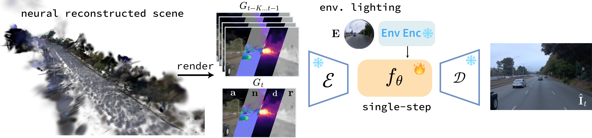

Preprint
TL;DR
PIH formulates harmonization under physical-intrinsic space, simplifying data curation pipelines and enabling illumination control.
Editable neural driving scenes are essential for scalable simulation, yet neural reconstructions often produce severe artifacts under novel viewpoints and virtual-asset insertion. Existing harmonizers operating in RGB space learn these corrections from heterogeneous failure patterns, making extension to new editing operations data intensive. We reformulate the task as physical-intrinsic harmonization, using imperfect depth, normals, albedo, roughness, and illumination recovered from neural reconstruction as a compositional interface. This interface lets evaluated edits, including virtual asset insertion, be expressed by composing physical factors without insertion-specific paired RGB correction data. To make the formulation practical for online simulation, we propose PIH, a one-step harmonizer that directly trained with latent flow matching on the predicted velocity and perceptual supervision on its decoded clean endpoint. Mixed RGB-grounded and self-rollout histories provide temporal context during training to ensure temporal consistency and prevent exposure bias. Experiments across Waymo, nuPlan, and PandaSet show that PIH improves perceptual realism, with PIH preferred over prior harmonizer in 78.81% of human comparisons with much fewer paired training frames, while also capable of illumination control.

Qualitative harmonization results across WOD, nuPlan, and PandaSet.
By harmonizing under the physical-intrinsic representation, PIH supports illumination control across five scenes and five lighting conditions.